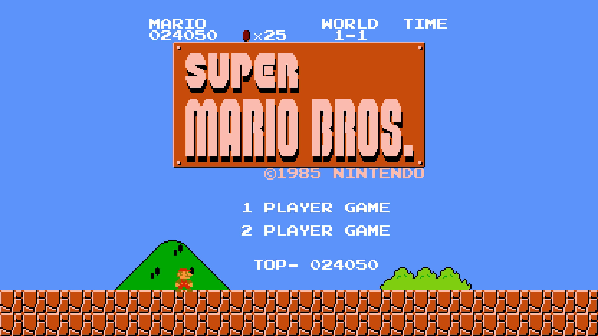

An important part of business is planning for the future and ensuring that the business survives changing market conditions. Some businesses do this remarkably well and last for hundreds of years. Using data from BusinessFinancing.co.uk, we discover the world's oldest businesses, when were they founded, and which industries do they belong to.
What makes a name timeless or trendy? In this project, I used data published by the U.S. Social Security Administration spanning over a hundred years to understand American baby name tastes.
SQL Skills: #ranking #grouping #joining #ordering #pattern matching skills

In this project, I analyzed video game critic and user scores as well as sales data for the top 400 video games released since 1977. The golden age of video games is found by identifying release years that users and critics liked best, and I further explored best selling video games by looking at game sales data.
SQL Skills: #set theory #grouping #joining #filtering #ordering
In this project, I analyzed international debt data collected by The World Bank from 1970 to 2015. I examine the total amount of debt owed by countries, which country owns the maximum amount of debt as well as the average amount of debt owed by countries across different debt indicators.